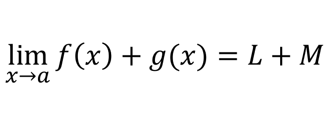

The theorem we want to prove states:

Let [ε > 0] be given. We want to find a number [δ > 0] such that:
Since f is continous at b:
For every number [ε/2 > 0], there is a number [δ1 > 0] and [δ2 > 0] such that:

Lets say [δ = min{δ1,δ2}]:
If we use the triangle inequality, we get:
So it means we concluded that:
Which basically means:
